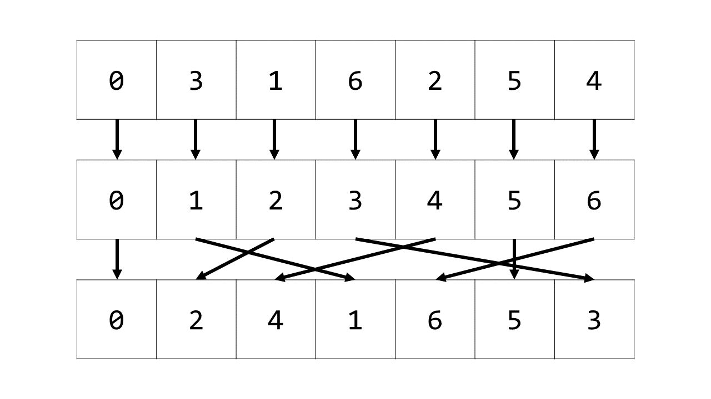

© 2019 《算法（第四版）》C# 题解 | Provided By 沈星繁
搜索解答
目前已完成到 2.5
2.5.19
上次更新：2019-02-11
发现了题解错误/代码缺陷/排版问题？请点这里：如何：提交反馈 。
题目
2.5.19
Kendall tau 距离。
编写一段程序 KendallTau.java ，
在线性对数时间内计算两组排列之间的 Kendall tau 距离。
解答
官方解答：
Kendall Tau：https://algs4.cs.princeton.edu/25applications/KendallTau.java.html
Inversion：https://algs4.cs.princeton.edu/22mergesort/Inversions.java.html
由书中 2.5.3.2 节得，两个数组之间的 Kendall Tau 距离即为两数组之间顺序不同的数对数目。
如果能够把其中一个数组变成标准排列（即 1,2,3,4... 这样的数组），
那么此时 Kendall Tau 距离就等于另一个数组中的逆序对数量。
现在我们来解决如何把一个数组 a 变成标准排列的方法。
也就是找到函数 $ f(x) $，使得 $ f(a[i])=i $ ，这样的函数其实就是数组 a 的逆数组。
如下图所示，逆数组 ainv 即为满足 ainv[a[i]] = i 的数组。

获得逆数组之后，对另一个数组 b 做同样的变换，令数组 bnew[i] = ainv[b[i]] 。
即 ainv[a[i]] = i, ainv[b[i]] = bnew[i] 。
于是问题转化为了 bnew 和标准排列之间的 Kendall Tau 距离，即 bnew 的逆序对数量。
逆序对数量的求法见 2.2.19。
代码
using System;
namespace _2._5._19
{
class Program
{
static void Main(string[] args)
{
// 官方解答：
// https://algs4.cs.princeton.edu/25applications/KendallTau.java.html
// https://algs4.cs.princeton.edu/22mergesort/Inversions.java.html
int[] testA = { 0, 3, 1, 6, 2, 5, 4 };
int[] testB = { 1, 0, 3, 6, 4, 2, 5 };
Console.WriteLine(Distance(testA, testB));
}
public static long Distance(int[] a, int[] b)
{
if (a.Length != b.Length)
throw new ArgumentException("Array dimensions disagree");
int n = a.Length;
int[] ainv = new int[n];
for (int i = 0; i < n; i++)
{
ainv[a[i]] = i;
}
int[] bnew = new int[n];
for (int i = 0; i < n; i++)
{
bnew[i] = ainv[b[i]];
}
Inversions inversions = new Inversions();
inversions.Count(bnew);
return inversions.Counter;
}
}
}